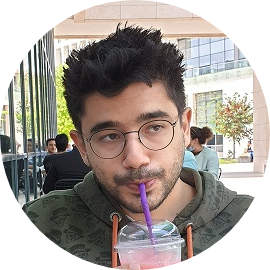

|  | Mehmet Batuhan KaraarslanSome engineer guy Graduated from Bilkent University, Electrical and Electronics Engineering department. Passion for Game Development, never formally practiced it though. Currently employed in Proven Bilişim as a Senior Software Developer. Learning web development, obviously from the state of this website (hehe). |
| Dates | Position | Jobs | Description |
|---|---|---|---|
| June 2020 - Current | Senior Software Engineer | Proven Bilişim, Hacettepe | Developed test software for test projects. Deveolped software for ASELSAN personnel to use. These software were mostly for receiving and transmitting messages over serial and ethernet connections. They were developed using Java and Javafx. |
| June 2019 - June 2020 | Software Test Engineer | Proven Bilişim, Hacettepe | Worked as Test Engineer for various ASELSAN projects. Tested softwares mostly for military marine applications. The performed tests were all manual tests. Developed test software for test projects. These software were mostly for receiving and transmitting messages over serial and ethernet connections. They were developed using Java and C#. |
| April 2018 - May 2019 | Software Test Engineer | Otonom Teknoloji, Bilkent | Worked as a subcontractor personnel at ASELSAN MGEO. Tested driver software for Hürkuş and Turkish Utility Helicopter Program. Since these tests were so low level tests, they were done using code. All of the tests were written in C++. Responsibilities included writing and running the tests, performing Software Coverage Analysis tests, reporting findings and performing FQTs. The tested drivers had to be certified as Level-A, so the tests were run according to the DO-178B guidelines. |
| July - August 2016 | Intern | ASELSAN, MGEO | Worked in the quality control department. |
| June - July 2015 | Intern | Desistek Robotics, METU | Worked on various design projects, mainly using microcontrollers. |
|
|
|
| Project | Description |
|---|---|
| TRC-10 Transceiver | An EEE211 (Analog Electronics) project. It is an analog signal transmitter/receiver with radio signals. |
| Guess to Learn | A CS102 (Algorithms and Programming 2) group project. It was done by using java. It was a game in which the user had to guess who or what a blurred image is. After a certain time is passed, the image was revealed and information about the answer was extracted from wikipedia and shown to the user. |
| Wall-e | An EEE102 (Digital Design) project. It’s an obstacle avoiding car. It was programmed in VHDL for the Basys2 FPGA board. It was using infrared sensors to detect obstacles. |
| Coilgun | This was an individual project which was done during the Summer Robotics program in METU. It was a proof of concept however. It was functioning as expected but needed better equipment to fully function. |
| Free Space Optical Communication | An EEE313 (Electronic Circuit Design) project. Uses a laser to transmit music to a receiver using a solar panel. |
| Wireless Phone Charger | An EEE351 (Engineering Electromagnetics) group project. By using coils we were able to transmit power to a cell phone wirelessly. |
| Voice Recognition | An EEE491 (Electrical and Electronics Engineering Design I) group project. It uses an FPGA (Basys3) and MATLAB to recognize numbers from 0 to 9. |
| Smart Collar | An EEE495 (Electrical and Electronics Engineering Design II) group project. It is an Internet of Things project and uses Raspberry Pi along with Android. It detects the location, ambient temperature and heartbeat of stray animals or pets. Android application shows this with a heatmap on screen. |
| Temperature-Humidity Controlled Chamber | An EEE492 (Senior Project) group project. It monitors the temperature and humidity in an enclosed system and takes necessary actions to make it stable. |